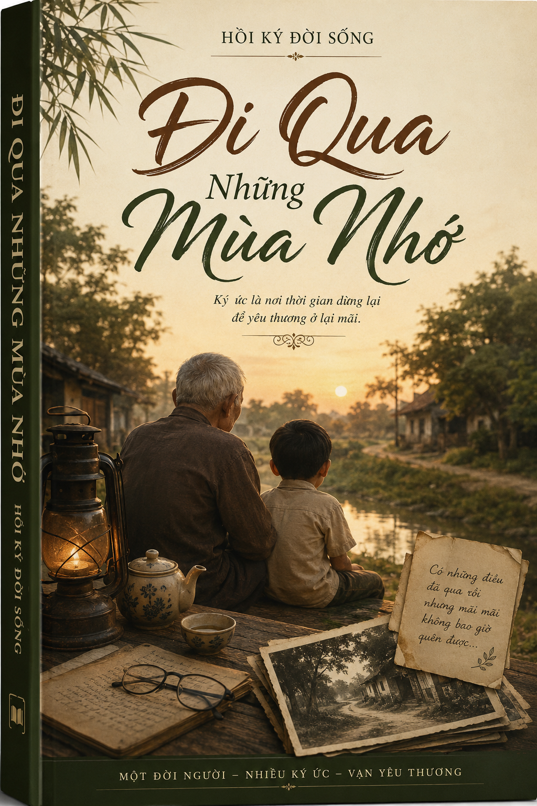

📖 Đi qua những mùa nhớ
Một đời người, nhiều ký ức, vạn yêu thương.

Giới thiệu
Cuốn “Đi qua những mùa nhớ” này không chỉ là câu chuyện riêng của một con người, mà còn là ký ức về một thời mở đất, về những con người chân chất đã dùng mồ hôi và nghị lực để biến vùng đất hoang sơ thành quê hương trù phú hôm nay. Đó cũng là lời tri ân đối với cha mẹ, đối với quê hương thân yêu và dòng sông Đá Bạc, nơi đã nuôi tôi khôn lớn và dạy tôi biết sống nghĩa tình, bền bỉ như chính dòng sông quê mình.
“Đi qua những mùa nhớ” là những dòng tự sự được chắt lọc từ ký ức và trải nghiệm của một đời người, tái hiện lại những chặng đường đã đi qua với nhiều biến cố, suy ngẫm và dấu ấn khó phai. Tác phẩm không chỉ ghi lại những câu chuyện mang tính cá nhân, mà còn phản ánh bối cảnh xã hội, môi trường sống và những giá trị tinh thần được hình thành qua thời gian. Thông qua từng trang viết, người đọc có thể cảm nhận rõ hơn sự chuyển động của thời cuộc, đồng thời tìm thấy những bài học sâu sắc về con người, về lòng kiên trì và niềm tin trong cuộc sống.